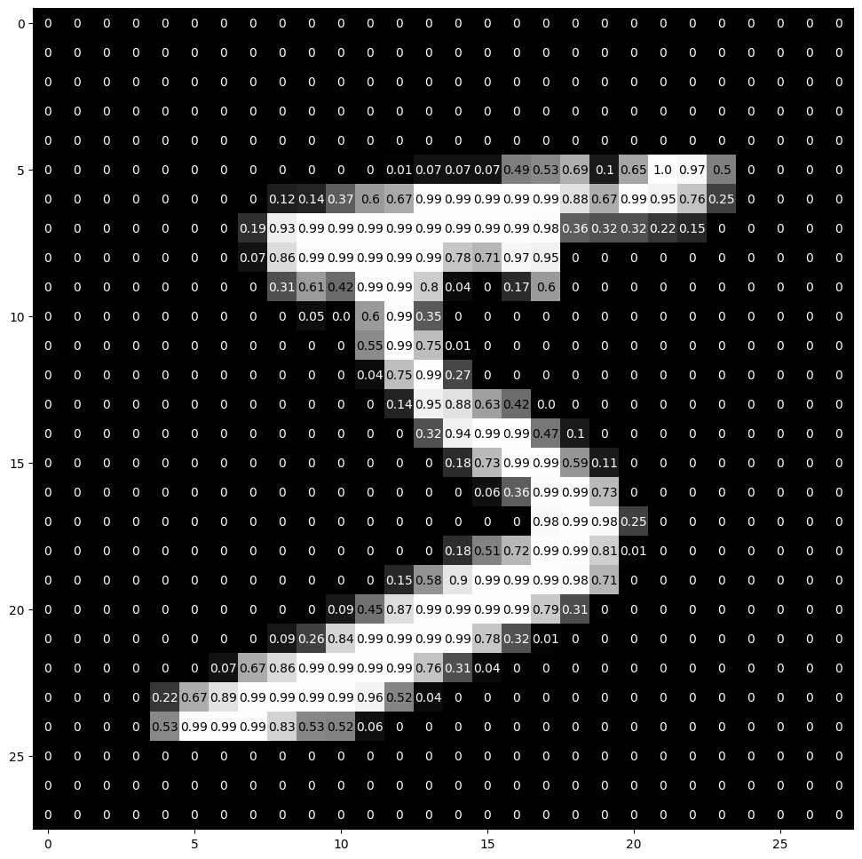
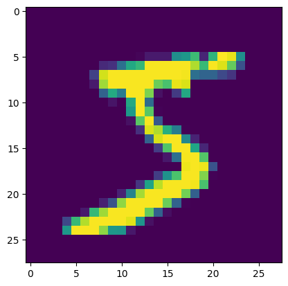
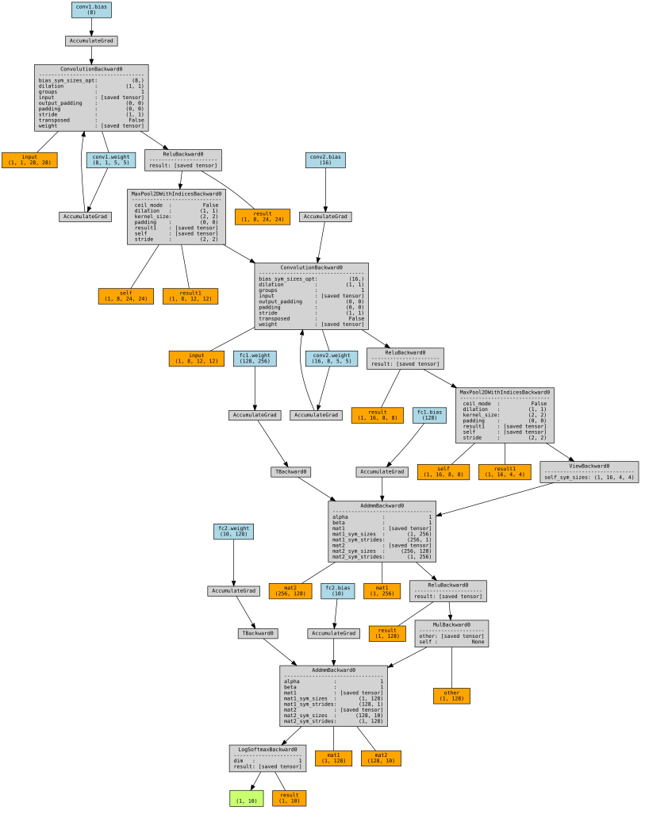
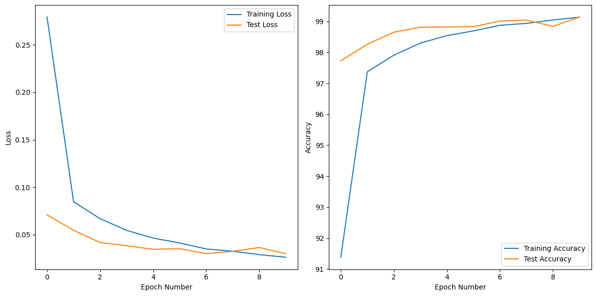
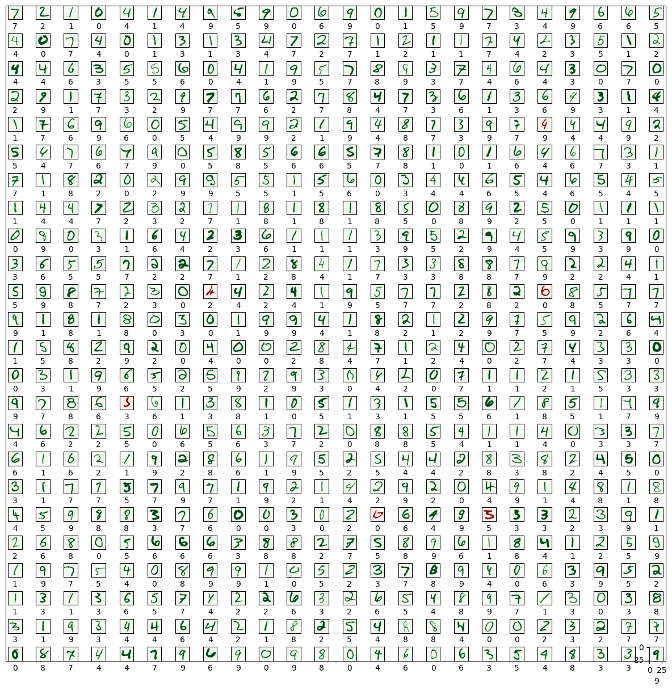
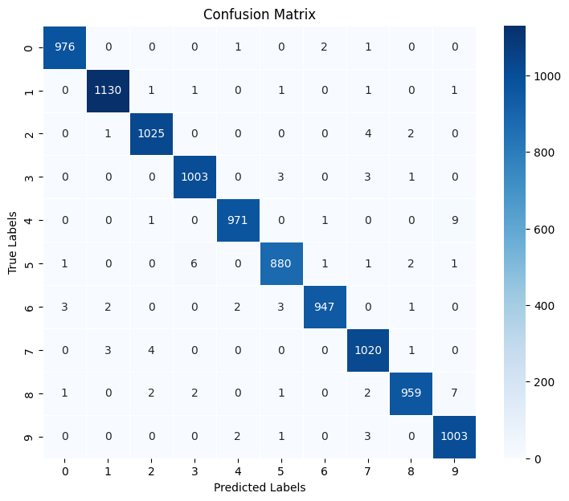

Code
import torch
print("PyTorch Version: " , torch.__version__)PyTorch Version: 2.6.0+cu124project-1Poornima Bhatia
January 21, 2025
Collecting torchviz
Downloading torchviz-0.0.3-py3-none-any.whl.metadata (2.1 kB)
Requirement already satisfied: graphviz in /usr/local/lib/python3.11/dist-packages (0.20.3)
Requirement already satisfied: torch in /usr/local/lib/python3.11/dist-packages (from torchviz) (2.6.0+cu124)
Requirement already satisfied: filelock in /usr/local/lib/python3.11/dist-packages (from torch->torchviz) (3.18.0)
Requirement already satisfied: typing-extensions>=4.10.0 in /usr/local/lib/python3.11/dist-packages (from torch->torchviz) (4.13.0)
Requirement already satisfied: networkx in /usr/local/lib/python3.11/dist-packages (from torch->torchviz) (3.4.2)
Requirement already satisfied: jinja2 in /usr/local/lib/python3.11/dist-packages (from torch->torchviz) (3.1.6)
Requirement already satisfied: fsspec in /usr/local/lib/python3.11/dist-packages (from torch->torchviz) (2025.3.2)
Collecting nvidia-cuda-nvrtc-cu12==12.4.127 (from torch->torchviz)
Downloading nvidia_cuda_nvrtc_cu12-12.4.127-py3-none-manylinux2014_x86_64.whl.metadata (1.5 kB)
Collecting nvidia-cuda-runtime-cu12==12.4.127 (from torch->torchviz)
Downloading nvidia_cuda_runtime_cu12-12.4.127-py3-none-manylinux2014_x86_64.whl.metadata (1.5 kB)
Collecting nvidia-cuda-cupti-cu12==12.4.127 (from torch->torchviz)
Downloading nvidia_cuda_cupti_cu12-12.4.127-py3-none-manylinux2014_x86_64.whl.metadata (1.6 kB)
Collecting nvidia-cudnn-cu12==9.1.0.70 (from torch->torchviz)
Downloading nvidia_cudnn_cu12-9.1.0.70-py3-none-manylinux2014_x86_64.whl.metadata (1.6 kB)
Collecting nvidia-cublas-cu12==12.4.5.8 (from torch->torchviz)
Downloading nvidia_cublas_cu12-12.4.5.8-py3-none-manylinux2014_x86_64.whl.metadata (1.5 kB)
Collecting nvidia-cufft-cu12==11.2.1.3 (from torch->torchviz)
Downloading nvidia_cufft_cu12-11.2.1.3-py3-none-manylinux2014_x86_64.whl.metadata (1.5 kB)
Collecting nvidia-curand-cu12==10.3.5.147 (from torch->torchviz)
Downloading nvidia_curand_cu12-10.3.5.147-py3-none-manylinux2014_x86_64.whl.metadata (1.5 kB)
Collecting nvidia-cusolver-cu12==11.6.1.9 (from torch->torchviz)
Downloading nvidia_cusolver_cu12-11.6.1.9-py3-none-manylinux2014_x86_64.whl.metadata (1.6 kB)
Collecting nvidia-cusparse-cu12==12.3.1.170 (from torch->torchviz)
Downloading nvidia_cusparse_cu12-12.3.1.170-py3-none-manylinux2014_x86_64.whl.metadata (1.6 kB)
Requirement already satisfied: nvidia-cusparselt-cu12==0.6.2 in /usr/local/lib/python3.11/dist-packages (from torch->torchviz) (0.6.2)
Requirement already satisfied: nvidia-nccl-cu12==2.21.5 in /usr/local/lib/python3.11/dist-packages (from torch->torchviz) (2.21.5)
Requirement already satisfied: nvidia-nvtx-cu12==12.4.127 in /usr/local/lib/python3.11/dist-packages (from torch->torchviz) (12.4.127)
Collecting nvidia-nvjitlink-cu12==12.4.127 (from torch->torchviz)
Downloading nvidia_nvjitlink_cu12-12.4.127-py3-none-manylinux2014_x86_64.whl.metadata (1.5 kB)
Requirement already satisfied: triton==3.2.0 in /usr/local/lib/python3.11/dist-packages (from torch->torchviz) (3.2.0)
Requirement already satisfied: sympy==1.13.1 in /usr/local/lib/python3.11/dist-packages (from torch->torchviz) (1.13.1)
Requirement already satisfied: mpmath<1.4,>=1.1.0 in /usr/local/lib/python3.11/dist-packages (from sympy==1.13.1->torch->torchviz) (1.3.0)
Requirement already satisfied: MarkupSafe>=2.0 in /usr/local/lib/python3.11/dist-packages (from jinja2->torch->torchviz) (3.0.2)
Downloading torchviz-0.0.3-py3-none-any.whl (5.7 kB)
Downloading nvidia_cublas_cu12-12.4.5.8-py3-none-manylinux2014_x86_64.whl (363.4 MB)
━━━━━━━━━━━━━━━━━━━━━━━━━━━━━━━━━━━━━━━━ 363.4/363.4 MB 1.2 MB/s eta 0:00:00
Downloading nvidia_cuda_cupti_cu12-12.4.127-py3-none-manylinux2014_x86_64.whl (13.8 MB)
━━━━━━━━━━━━━━━━━━━━━━━━━━━━━━━━━━━━━━━━ 13.8/13.8 MB 26.5 MB/s eta 0:00:00
Downloading nvidia_cuda_nvrtc_cu12-12.4.127-py3-none-manylinux2014_x86_64.whl (24.6 MB)
━━━━━━━━━━━━━━━━━━━━━━━━━━━━━━━━━━━━━━━━ 24.6/24.6 MB 21.3 MB/s eta 0:00:00
Downloading nvidia_cuda_runtime_cu12-12.4.127-py3-none-manylinux2014_x86_64.whl (883 kB)
━━━━━━━━━━━━━━━━━━━━━━━━━━━━━━━━━━━━━━━━ 883.7/883.7 kB 23.4 MB/s eta 0:00:00
Downloading nvidia_cudnn_cu12-9.1.0.70-py3-none-manylinux2014_x86_64.whl (664.8 MB)
━━━━━━━━━━━━━━━━━━━━━━━━━━━━━━━━━━━━━━━━ 664.8/664.8 MB 1.3 MB/s eta 0:00:00
Downloading nvidia_cufft_cu12-11.2.1.3-py3-none-manylinux2014_x86_64.whl (211.5 MB)
━━━━━━━━━━━━━━━━━━━━━━━━━━━━━━━━━━━━━━━━ 211.5/211.5 MB 2.1 MB/s eta 0:00:00
Downloading nvidia_curand_cu12-10.3.5.147-py3-none-manylinux2014_x86_64.whl (56.3 MB)
━━━━━━━━━━━━━━━━━━━━━━━━━━━━━━━━━━━━━━━━ 56.3/56.3 MB 8.8 MB/s eta 0:00:00
Downloading nvidia_cusolver_cu12-11.6.1.9-py3-none-manylinux2014_x86_64.whl (127.9 MB)
━━━━━━━━━━━━━━━━━━━━━━━━━━━━━━━━━━━━━━━━ 127.9/127.9 MB 7.0 MB/s eta 0:00:00
Downloading nvidia_cusparse_cu12-12.3.1.170-py3-none-manylinux2014_x86_64.whl (207.5 MB)
━━━━━━━━━━━━━━━━━━━━━━━━━━━━━━━━━━━━━━━━ 207.5/207.5 MB 4.6 MB/s eta 0:00:00
Downloading nvidia_nvjitlink_cu12-12.4.127-py3-none-manylinux2014_x86_64.whl (21.1 MB)
━━━━━━━━━━━━━━━━━━━━━━━━━━━━━━━━━━━━━━━━ 21.1/21.1 MB 84.2 MB/s eta 0:00:00
Installing collected packages: nvidia-nvjitlink-cu12, nvidia-curand-cu12, nvidia-cufft-cu12, nvidia-cuda-runtime-cu12, nvidia-cuda-nvrtc-cu12, nvidia-cuda-cupti-cu12, nvidia-cublas-cu12, nvidia-cusparse-cu12, nvidia-cudnn-cu12, nvidia-cusolver-cu12, torchviz
Attempting uninstall: nvidia-nvjitlink-cu12
Found existing installation: nvidia-nvjitlink-cu12 12.5.82
Uninstalling nvidia-nvjitlink-cu12-12.5.82:
Successfully uninstalled nvidia-nvjitlink-cu12-12.5.82
Attempting uninstall: nvidia-curand-cu12
Found existing installation: nvidia-curand-cu12 10.3.6.82
Uninstalling nvidia-curand-cu12-10.3.6.82:
Successfully uninstalled nvidia-curand-cu12-10.3.6.82
Attempting uninstall: nvidia-cufft-cu12
Found existing installation: nvidia-cufft-cu12 11.2.3.61
Uninstalling nvidia-cufft-cu12-11.2.3.61:
Successfully uninstalled nvidia-cufft-cu12-11.2.3.61
Attempting uninstall: nvidia-cuda-runtime-cu12
Found existing installation: nvidia-cuda-runtime-cu12 12.5.82
Uninstalling nvidia-cuda-runtime-cu12-12.5.82:
Successfully uninstalled nvidia-cuda-runtime-cu12-12.5.82
Attempting uninstall: nvidia-cuda-nvrtc-cu12
Found existing installation: nvidia-cuda-nvrtc-cu12 12.5.82
Uninstalling nvidia-cuda-nvrtc-cu12-12.5.82:
Successfully uninstalled nvidia-cuda-nvrtc-cu12-12.5.82
Attempting uninstall: nvidia-cuda-cupti-cu12
Found existing installation: nvidia-cuda-cupti-cu12 12.5.82
Uninstalling nvidia-cuda-cupti-cu12-12.5.82:
Successfully uninstalled nvidia-cuda-cupti-cu12-12.5.82
Attempting uninstall: nvidia-cublas-cu12
Found existing installation: nvidia-cublas-cu12 12.5.3.2
Uninstalling nvidia-cublas-cu12-12.5.3.2:
Successfully uninstalled nvidia-cublas-cu12-12.5.3.2
Attempting uninstall: nvidia-cusparse-cu12
Found existing installation: nvidia-cusparse-cu12 12.5.1.3
Uninstalling nvidia-cusparse-cu12-12.5.1.3:
Successfully uninstalled nvidia-cusparse-cu12-12.5.1.3
Attempting uninstall: nvidia-cudnn-cu12
Found existing installation: nvidia-cudnn-cu12 9.3.0.75
Uninstalling nvidia-cudnn-cu12-9.3.0.75:
Successfully uninstalled nvidia-cudnn-cu12-9.3.0.75
Attempting uninstall: nvidia-cusolver-cu12
Found existing installation: nvidia-cusolver-cu12 11.6.3.83
Uninstalling nvidia-cusolver-cu12-11.6.3.83:
Successfully uninstalled nvidia-cusolver-cu12-11.6.3.83
Successfully installed nvidia-cublas-cu12-12.4.5.8 nvidia-cuda-cupti-cu12-12.4.127 nvidia-cuda-nvrtc-cu12-12.4.127 nvidia-cuda-runtime-cu12-12.4.127 nvidia-cudnn-cu12-9.1.0.70 nvidia-cufft-cu12-11.2.1.3 nvidia-curand-cu12-10.3.5.147 nvidia-cusolver-cu12-11.6.1.9 nvidia-cusparse-cu12-12.3.1.170 nvidia-nvjitlink-cu12-12.4.127 torchviz-0.0.3Python Version: 3.11.11from torchvision import datasets, transforms
# Define a transform to normalize the data
transform = transforms.Compose([transforms.ToTensor()])
# Load the MNIST dataset
train_dataset = datasets.MNIST(root='./data', train=True, download=True, transform=transform)
test_dataset = datasets.MNIST(root='./data', train=False, download=True, transform=transform)
# Convert datasets to tensors
x_train = torch.tensor(train_dataset.data, dtype=torch.float32) # Shape: (60000, 28, 28)
y_train = torch.tensor(train_dataset.targets, dtype=torch.long) # Shape: (60000,)
x_test = torch.tensor(test_dataset.data, dtype=torch.float32) # Shape: (10000, 28, 28)
y_test = torch.tensor(test_dataset.targets, dtype=torch.long) # Shape: (10000,)
# Normalize x_train and x_test (since TensorFlow automatically scales between 0-1)
x_train /= 255.0
x_test /= 255.0100%|██████████| 9.91M/9.91M [00:01<00:00, 5.01MB/s]
100%|██████████| 28.9k/28.9k [00:00<00:00, 160kB/s]
100%|██████████| 1.65M/1.65M [00:01<00:00, 1.52MB/s]
100%|██████████| 4.54k/4.54k [00:00<00:00, 4.91MB/s]
<ipython-input-5-ecea156f48d2>:11: UserWarning: To copy construct from a tensor, it is recommended to use sourceTensor.clone().detach() or sourceTensor.clone().detach().requires_grad_(True), rather than torch.tensor(sourceTensor).
x_train = torch.tensor(train_dataset.data, dtype=torch.float32) # Shape: (60000, 28, 28)
<ipython-input-5-ecea156f48d2>:12: UserWarning: To copy construct from a tensor, it is recommended to use sourceTensor.clone().detach() or sourceTensor.clone().detach().requires_grad_(True), rather than torch.tensor(sourceTensor).
y_train = torch.tensor(train_dataset.targets, dtype=torch.long) # Shape: (60000,)
<ipython-input-5-ecea156f48d2>:13: UserWarning: To copy construct from a tensor, it is recommended to use sourceTensor.clone().detach() or sourceTensor.clone().detach().requires_grad_(True), rather than torch.tensor(sourceTensor).
x_test = torch.tensor(test_dataset.data, dtype=torch.float32) # Shape: (10000, 28, 28)
<ipython-input-5-ecea156f48d2>:14: UserWarning: To copy construct from a tensor, it is recommended to use sourceTensor.clone().detach() or sourceTensor.clone().detach().requires_grad_(True), rather than torch.tensor(sourceTensor).
y_test = torch.tensor(test_dataset.targets, dtype=torch.long) # Shape: (10000,)Number of training examples: 60000
Number of test examples: 10000
x_train: torch.Size([60000, 28, 28])
y_train: torch.Size([60000])
x_test: torch.Size([10000, 28, 28])
y_test: torch.Size([10000])image_width: 28
image_height: 28
image_channels: 1Here is how each image in the dataset looks like. It is a 28x28 matrix of integers (from 0 to 255). Each integer represents a color of a pixel.
| 0 | 1 | 2 | 3 | 4 | 5 | 6 | 7 | 8 | 9 | ... | 18 | 19 | 20 | 21 | 22 | 23 | 24 | 25 | 26 | 27 | |
|---|---|---|---|---|---|---|---|---|---|---|---|---|---|---|---|---|---|---|---|---|---|
| 0 | 0.0 | 0.0 | 0.0 | 0.0 | 0.000000 | 0.000000 | 0.000000 | 0.000000 | 0.000000 | 0.000000 | ... | 0.000000 | 0.000000 | 0.000000 | 0.000000 | 0.000000 | 0.000000 | 0.0 | 0.0 | 0.0 | 0.0 |
| 1 | 0.0 | 0.0 | 0.0 | 0.0 | 0.000000 | 0.000000 | 0.000000 | 0.000000 | 0.000000 | 0.000000 | ... | 0.000000 | 0.000000 | 0.000000 | 0.000000 | 0.000000 | 0.000000 | 0.0 | 0.0 | 0.0 | 0.0 |
| 2 | 0.0 | 0.0 | 0.0 | 0.0 | 0.000000 | 0.000000 | 0.000000 | 0.000000 | 0.000000 | 0.000000 | ... | 0.000000 | 0.000000 | 0.000000 | 0.000000 | 0.000000 | 0.000000 | 0.0 | 0.0 | 0.0 | 0.0 |
| 3 | 0.0 | 0.0 | 0.0 | 0.0 | 0.000000 | 0.000000 | 0.000000 | 0.000000 | 0.000000 | 0.000000 | ... | 0.000000 | 0.000000 | 0.000000 | 0.000000 | 0.000000 | 0.000000 | 0.0 | 0.0 | 0.0 | 0.0 |
| 4 | 0.0 | 0.0 | 0.0 | 0.0 | 0.000000 | 0.000000 | 0.000000 | 0.000000 | 0.000000 | 0.000000 | ... | 0.000000 | 0.000000 | 0.000000 | 0.000000 | 0.000000 | 0.000000 | 0.0 | 0.0 | 0.0 | 0.0 |
| 5 | 0.0 | 0.0 | 0.0 | 0.0 | 0.000000 | 0.000000 | 0.000000 | 0.000000 | 0.000000 | 0.000000 | ... | 0.686275 | 0.101961 | 0.650980 | 1.000000 | 0.968627 | 0.498039 | 0.0 | 0.0 | 0.0 | 0.0 |
| 6 | 0.0 | 0.0 | 0.0 | 0.0 | 0.000000 | 0.000000 | 0.000000 | 0.000000 | 0.117647 | 0.141176 | ... | 0.882353 | 0.674510 | 0.992157 | 0.949020 | 0.764706 | 0.250980 | 0.0 | 0.0 | 0.0 | 0.0 |
| 7 | 0.0 | 0.0 | 0.0 | 0.0 | 0.000000 | 0.000000 | 0.000000 | 0.192157 | 0.933333 | 0.992157 | ... | 0.364706 | 0.321569 | 0.321569 | 0.219608 | 0.152941 | 0.000000 | 0.0 | 0.0 | 0.0 | 0.0 |
| 8 | 0.0 | 0.0 | 0.0 | 0.0 | 0.000000 | 0.000000 | 0.000000 | 0.070588 | 0.858824 | 0.992157 | ... | 0.000000 | 0.000000 | 0.000000 | 0.000000 | 0.000000 | 0.000000 | 0.0 | 0.0 | 0.0 | 0.0 |
| 9 | 0.0 | 0.0 | 0.0 | 0.0 | 0.000000 | 0.000000 | 0.000000 | 0.000000 | 0.313726 | 0.611765 | ... | 0.000000 | 0.000000 | 0.000000 | 0.000000 | 0.000000 | 0.000000 | 0.0 | 0.0 | 0.0 | 0.0 |
| 10 | 0.0 | 0.0 | 0.0 | 0.0 | 0.000000 | 0.000000 | 0.000000 | 0.000000 | 0.000000 | 0.054902 | ... | 0.000000 | 0.000000 | 0.000000 | 0.000000 | 0.000000 | 0.000000 | 0.0 | 0.0 | 0.0 | 0.0 |
| 11 | 0.0 | 0.0 | 0.0 | 0.0 | 0.000000 | 0.000000 | 0.000000 | 0.000000 | 0.000000 | 0.000000 | ... | 0.000000 | 0.000000 | 0.000000 | 0.000000 | 0.000000 | 0.000000 | 0.0 | 0.0 | 0.0 | 0.0 |
| 12 | 0.0 | 0.0 | 0.0 | 0.0 | 0.000000 | 0.000000 | 0.000000 | 0.000000 | 0.000000 | 0.000000 | ... | 0.000000 | 0.000000 | 0.000000 | 0.000000 | 0.000000 | 0.000000 | 0.0 | 0.0 | 0.0 | 0.0 |
| 13 | 0.0 | 0.0 | 0.0 | 0.0 | 0.000000 | 0.000000 | 0.000000 | 0.000000 | 0.000000 | 0.000000 | ... | 0.000000 | 0.000000 | 0.000000 | 0.000000 | 0.000000 | 0.000000 | 0.0 | 0.0 | 0.0 | 0.0 |
| 14 | 0.0 | 0.0 | 0.0 | 0.0 | 0.000000 | 0.000000 | 0.000000 | 0.000000 | 0.000000 | 0.000000 | ... | 0.098039 | 0.000000 | 0.000000 | 0.000000 | 0.000000 | 0.000000 | 0.0 | 0.0 | 0.0 | 0.0 |
| 15 | 0.0 | 0.0 | 0.0 | 0.0 | 0.000000 | 0.000000 | 0.000000 | 0.000000 | 0.000000 | 0.000000 | ... | 0.588235 | 0.105882 | 0.000000 | 0.000000 | 0.000000 | 0.000000 | 0.0 | 0.0 | 0.0 | 0.0 |
| 16 | 0.0 | 0.0 | 0.0 | 0.0 | 0.000000 | 0.000000 | 0.000000 | 0.000000 | 0.000000 | 0.000000 | ... | 0.992157 | 0.733333 | 0.000000 | 0.000000 | 0.000000 | 0.000000 | 0.0 | 0.0 | 0.0 | 0.0 |
| 17 | 0.0 | 0.0 | 0.0 | 0.0 | 0.000000 | 0.000000 | 0.000000 | 0.000000 | 0.000000 | 0.000000 | ... | 0.992157 | 0.976471 | 0.250980 | 0.000000 | 0.000000 | 0.000000 | 0.0 | 0.0 | 0.0 | 0.0 |
| 18 | 0.0 | 0.0 | 0.0 | 0.0 | 0.000000 | 0.000000 | 0.000000 | 0.000000 | 0.000000 | 0.000000 | ... | 0.992157 | 0.811765 | 0.007843 | 0.000000 | 0.000000 | 0.000000 | 0.0 | 0.0 | 0.0 | 0.0 |
| 19 | 0.0 | 0.0 | 0.0 | 0.0 | 0.000000 | 0.000000 | 0.000000 | 0.000000 | 0.000000 | 0.000000 | ... | 0.980392 | 0.713726 | 0.000000 | 0.000000 | 0.000000 | 0.000000 | 0.0 | 0.0 | 0.0 | 0.0 |
| 20 | 0.0 | 0.0 | 0.0 | 0.0 | 0.000000 | 0.000000 | 0.000000 | 0.000000 | 0.000000 | 0.000000 | ... | 0.305882 | 0.000000 | 0.000000 | 0.000000 | 0.000000 | 0.000000 | 0.0 | 0.0 | 0.0 | 0.0 |
| 21 | 0.0 | 0.0 | 0.0 | 0.0 | 0.000000 | 0.000000 | 0.000000 | 0.000000 | 0.090196 | 0.258824 | ... | 0.000000 | 0.000000 | 0.000000 | 0.000000 | 0.000000 | 0.000000 | 0.0 | 0.0 | 0.0 | 0.0 |
| 22 | 0.0 | 0.0 | 0.0 | 0.0 | 0.000000 | 0.000000 | 0.070588 | 0.670588 | 0.858824 | 0.992157 | ... | 0.000000 | 0.000000 | 0.000000 | 0.000000 | 0.000000 | 0.000000 | 0.0 | 0.0 | 0.0 | 0.0 |
| 23 | 0.0 | 0.0 | 0.0 | 0.0 | 0.215686 | 0.674510 | 0.886275 | 0.992157 | 0.992157 | 0.992157 | ... | 0.000000 | 0.000000 | 0.000000 | 0.000000 | 0.000000 | 0.000000 | 0.0 | 0.0 | 0.0 | 0.0 |
| 24 | 0.0 | 0.0 | 0.0 | 0.0 | 0.533333 | 0.992157 | 0.992157 | 0.992157 | 0.831373 | 0.529412 | ... | 0.000000 | 0.000000 | 0.000000 | 0.000000 | 0.000000 | 0.000000 | 0.0 | 0.0 | 0.0 | 0.0 |
| 25 | 0.0 | 0.0 | 0.0 | 0.0 | 0.000000 | 0.000000 | 0.000000 | 0.000000 | 0.000000 | 0.000000 | ... | 0.000000 | 0.000000 | 0.000000 | 0.000000 | 0.000000 | 0.000000 | 0.0 | 0.0 | 0.0 | 0.0 |
| 26 | 0.0 | 0.0 | 0.0 | 0.0 | 0.000000 | 0.000000 | 0.000000 | 0.000000 | 0.000000 | 0.000000 | ... | 0.000000 | 0.000000 | 0.000000 | 0.000000 | 0.000000 | 0.000000 | 0.0 | 0.0 | 0.0 | 0.0 |
| 27 | 0.0 | 0.0 | 0.0 | 0.0 | 0.000000 | 0.000000 | 0.000000 | 0.000000 | 0.000000 | 0.000000 | ... | 0.000000 | 0.000000 | 0.000000 | 0.000000 | 0.000000 | 0.000000 | 0.0 | 0.0 | 0.0 | 0.0 |
28 rows × 28 columns
img = np.squeeze(x_train[0].numpy())
fig = plt.figure(figsize = (12,12))
ax = fig.add_subplot(111)
ax.imshow(img, cmap='gray')
width, height = img.shape
thresh = img.max()/2.5
for x in range(width):
for y in range(height):
val = round(img[x][y],2) if img[x][y] !=0 else 0
ax.annotate(str(val), xy=(y,x),
horizontalalignment='center',
verticalalignment='center',
color='white' if img[x][y]<thresh else 'black')

In order to use convolution layers we need to reshape our data and add a color channel to it. As you’ve noticed currently every digit has a shape of (28, 28) which means that it is a 28x28 matrix of color values form 0 to 255. We need to reshape it to (28, 28, 1) shape so that each pixel potentially may have multiple channels (like Red, Green and Blue).
x_train_with_channels = x_train.float().reshape(
x_train.shape[0],
image_width,
image_height,
image_channels
)
print("x_train_with_chanels: ", x_train_with_channels.shape)
x_test_with_channels = x_test.float().reshape(
x_test.shape[0],
image_width,
image_height,
image_channels
)
print("x_test_with_channels: ", x_test_with_channels.shape)x_train_with_chanels: torch.Size([60000, 28, 28, 1])
x_test_with_channels: torch.Size([10000, 28, 28, 1])Here we’re just trying to move from values range of [0…255] to [0…1].
normalization range: 0.0 1.0class CNNModel(nn.Module):
def __init__(self):
super(CNNModel, self).__init__()
# Convolution Layer 1
self.conv1 = nn.Conv2d(in_channels=image_channels, out_channels=8, kernel_size=5, stride=1)
self.pool = nn.MaxPool2d(kernel_size=2, stride=2) # MaxPooling
# Convolution Layer 2
self.conv2 = nn.Conv2d(in_channels=8, out_channels=16, kernel_size=5, stride=1)
# Fully Connected Layers
self.fc1 = nn.Linear(16 * ((image_width // 4) - 3) * ((image_height // 4) - 3), 128) # Flattened size
self.dropout = nn.Dropout(0.2)
self.fc2 = nn.Linear(128, 10) # Output layer (10 classes)
def forward(self, x):
x = F.relu(self.conv1(x)) # Conv1 + ReLU
x = self.pool(x) # MaxPooling1
x = F.relu(self.conv2(x)) # Conv2 + ReLU
x = self.pool(x) # MaxPooling2
x = torch.flatten(x, start_dim=1) # Flatten
x = F.relu(self.fc1(x)) # Fully Connected Layer
x = self.dropout(x) # Dropout Layer
x = F.log_softmax(self.fc2(x), dim=1) # Softmax activation for 10 classes
return x
# Create model instance
model = CNNModel()
print(model) # Display the model architectureCNNModel(
(conv1): Conv2d(1, 8, kernel_size=(5, 5), stride=(1, 1))
(pool): MaxPool2d(kernel_size=2, stride=2, padding=0, dilation=1, ceil_mode=False)
(conv2): Conv2d(8, 16, kernel_size=(5, 5), stride=(1, 1))
(fc1): Linear(in_features=256, out_features=128, bias=True)
(dropout): Dropout(p=0.2, inplace=False)
(fc2): Linear(in_features=128, out_features=10, bias=True)
)def count_parameters(model):
total_params = sum(p.numel() for p in model.parameters()) # Total parameters
trainable_params = sum(p.numel() for p in model.parameters() if p.requires_grad) # Trainable parameters
non_trainable_params = total_params - trainable_params # Non-trainable parameters
print(f"Total Parameters: {total_params}")
print(f"Trainable Parameters: {trainable_params}")
print(f"Non-Trainable Parameters: {non_trainable_params}")
# Create model instance and count parameters
model = CNNModel()
count_parameters(model)Total Parameters: 37610
Trainable Parameters: 37610
Non-Trainable Parameters: 0# Generate a sample input tensor
input_tensor = torch.randn(1, 1, 28, 28)
# Forward pass through the model
output = model(input_tensor)
# Generate the computation graph
graph = make_dot(output, params=dict(model.named_parameters()) , show_attrs=True, show_saved=True)
# Render and display the graph
graph.render("cnn_model_graph", format="png") # Saves as a PNG file
graph # Display
import torch.optim as optim
from torch.utils.data import DataLoader, TensorDataset
# Create TensorDataset for train and test data
train_dataset = TensorDataset(x_train_with_channels, y_train)
test_dataset = TensorDataset(x_test_with_channels, y_test)
# Create DataLoader objects for batching
batch_size = 64 # You can adjust the batch size as needed
train_loader = DataLoader(train_dataset, batch_size=batch_size, shuffle=True)
test_loader = DataLoader(test_dataset, batch_size=batch_size, shuffle=False)
# Initialize the model, loss function, and optimizer
model = CNNModel()
criterion = nn.CrossEntropyLoss()
optimizer = optim.Adam(model.parameters(), lr=0.001)
# Tracking history
train_losses = []
train_accuracies = []
test_losses = []
test_accuracies = []
epochs = 10
# Training loop
for epoch in range(epochs):
model.train()
running_loss = 0.0
correct = 0
total = 0
# Training phase
for inputs, labels in train_loader:
optimizer.zero_grad()
outputs = model(inputs.permute(0,3,1,2))
loss = criterion(outputs, labels)
loss.backward()
optimizer.step()
running_loss += loss.item()
_, predicted = torch.max(outputs, 1)
total += labels.size(0)
correct += (predicted == labels).sum().item()
train_loss = running_loss / len(train_loader)
train_accuracy = 100 * correct / total
train_losses.append(train_loss)
train_accuracies.append(train_accuracy)
# Validation phase
model.eval()
running_loss = 0.0
correct = 0
total = 0
with torch.no_grad():
for inputs, labels in test_loader:
outputs = model(inputs.permute(0,3,1,2))
loss = criterion(outputs, labels)
running_loss += loss.item()
_, predicted = torch.max(outputs, 1)
total += labels.size(0)
correct += (predicted == labels).sum().item()
test_loss = running_loss / len(test_loader)
test_accuracy = 100 * correct / total
test_losses.append(test_loss)
test_accuracies.append(test_accuracy)
# Print the progress
print(f'Epoch {epoch+1}/{10}, Train Loss: {train_loss:.4f}, Train Accuracy: {train_accuracy:.2f}%, '
f'Test Loss: {test_loss:.4f}, Test Accuracy: {test_accuracy:.2f}%')
# Plotting training and test loss
plt.figure(figsize=(12, 6))
plt.subplot(1, 2, 1)
plt.xlabel('Epoch Number')
plt.ylabel('Loss')
plt.plot(train_losses, label='Training Loss')
plt.plot(test_losses, label='Test Loss')
plt.legend()
# Plotting training and test accuracy
plt.subplot(1, 2, 2)
plt.xlabel('Epoch Number')
plt.ylabel('Accuracy')
plt.plot(train_accuracies, label='Training Accuracy')
plt.plot(test_accuracies, label='Test Accuracy')
plt.legend()
plt.tight_layout()
plt.show()Epoch 1/10, Train Loss: 0.2793, Train Accuracy: 91.38%, Test Loss: 0.0708, Test Accuracy: 97.73%
Epoch 2/10, Train Loss: 0.0846, Train Accuracy: 97.37%, Test Loss: 0.0546, Test Accuracy: 98.26%
Epoch 3/10, Train Loss: 0.0668, Train Accuracy: 97.91%, Test Loss: 0.0416, Test Accuracy: 98.65%
Epoch 4/10, Train Loss: 0.0545, Train Accuracy: 98.30%, Test Loss: 0.0384, Test Accuracy: 98.81%
Epoch 5/10, Train Loss: 0.0464, Train Accuracy: 98.54%, Test Loss: 0.0345, Test Accuracy: 98.82%
Epoch 6/10, Train Loss: 0.0412, Train Accuracy: 98.69%, Test Loss: 0.0352, Test Accuracy: 98.83%
Epoch 7/10, Train Loss: 0.0349, Train Accuracy: 98.87%, Test Loss: 0.0300, Test Accuracy: 99.01%
Epoch 8/10, Train Loss: 0.0325, Train Accuracy: 98.94%, Test Loss: 0.0324, Test Accuracy: 99.04%
Epoch 9/10, Train Loss: 0.0289, Train Accuracy: 99.05%, Test Loss: 0.0364, Test Accuracy: 98.84%
Epoch 10/10, Train Loss: 0.0262, Train Accuracy: 99.14%, Test Loss: 0.0299, Test Accuracy: 99.14%
# Convert the data into PyTorch tensors (assuming you already have x_train, y_train, x_test, and y_test)
x_train_tensor = torch.tensor(x_train_with_channels, dtype=torch.float32) # Shape: (60000, 1, 28, 28)
y_train_tensor = torch.tensor(y_train, dtype=torch.long) # Shape: (60000,)
x_test_tensor = torch.tensor(x_test_with_channels, dtype=torch.float32) # Shape: (10000, 1, 28, 28)
y_test_tensor = torch.tensor(y_test, dtype=torch.long) # Shape: (10000,)
# Final evaluation on the train set
model.eval()
with torch.no_grad():
# Evaluation on the training set
train_outputs = model(x_train_tensor.permute(0,3,1,2)) # Assuming input shape is [batch_size, channels, height, width]
_, train_predictions = torch.max(train_outputs, 1) # Get the predicted class
train_loss = criterion(train_outputs, y_train_tensor).item() # Compute loss
train_accuracy = 100 * (train_predictions == y_train_tensor).sum().item() / len(y_train_tensor) # Compute accuracy
print(f'Training Loss: {train_loss:.4f}')
print(f'Training Accuracy: {train_accuracy:.2f}%')
# Evaluation on the test set
test_outputs = model(x_test_tensor.permute(0,3,1,2)) # Test set evaluation
_, test_predictions = torch.max(test_outputs, 1) # Get the predicted class
test_loss = criterion(test_outputs, y_test_tensor).item() # Compute loss
test_accuracy = 100 * (test_predictions == y_test_tensor).sum().item() / len(y_test_tensor) # Compute accuracy
print(f'Validation Loss: {test_loss:.4f}')
print(f'Validation Accuracy: {test_accuracy:.2f}%')UserWarning: To copy construct from a tensor, it is recommended to use sourceTensor.clone().detach() or sourceTensor.clone().detach().requires_grad_(True), rather than torch.tensor(sourceTensor).
x_train_tensor = torch.tensor(x_train_with_channels, dtype=torch.float32) # Shape: (60000, 1, 28, 28)
<ipython-input-19-f718d33e2e61>:3: UserWarning: To copy construct from a tensor, it is recommended to use sourceTensor.clone().detach() or sourceTensor.clone().detach().requires_grad_(True), rather than torch.tensor(sourceTensor).
y_train_tensor = torch.tensor(y_train, dtype=torch.long) # Shape: (60000,)
<ipython-input-19-f718d33e2e61>:4: UserWarning: To copy construct from a tensor, it is recommended to use sourceTensor.clone().detach() or sourceTensor.clone().detach().requires_grad_(True), rather than torch.tensor(sourceTensor).
x_test_tensor = torch.tensor(x_test_with_channels, dtype=torch.float32) # Shape: (10000, 1, 28, 28)
<ipython-input-19-f718d33e2e61>:5: UserWarning: To copy construct from a tensor, it is recommended to use sourceTensor.clone().detach() or sourceTensor.clone().detach().requires_grad_(True), rather than torch.tensor(sourceTensor).
y_test_tensor = torch.tensor(y_test, dtype=torch.long) # Shape: (10000,)Training Loss: 0.0129
Training Accuracy: 99.61%
Validation Loss: 0.0301
Validation Accuracy: 99.14%Model saved successfully.<All keys matched successfully># Set model to evaluation mode
model.eval()
# Get predictions from the model (output of the forward pass)
with torch.no_grad():
# Passing the test images through the model
outputs = model(x_test_normalized.permute(0, 3, 1, 2)) # Adding the channel dimension (if needed)
# Get the predicted labels from the output
_, predictions = torch.max(outputs, 1) # Get the class with the highest probability
# Convert predictions to numpy for easy indexing (ensure they're on CPU first)
predictions = predictions.cpu().numpy() # Move to CPU and then convert to NumPy array
# Now, we can visualize the test images and their predictions
numbers_to_display = 576 # Number of images to display
num_cells = math.ceil(math.sqrt(numbers_to_display)) # Calculate grid size for plotting
plt.figure(figsize=(15, 15))
# Loop through each example to display it
for plot_index in range(numbers_to_display):
predicted_label = predictions[plot_index] # Get the predicted class label
true_label = y_test[plot_index] # Get the true class label
# Set the color map based on whether the prediction is correct
color_map = 'Greens' if predicted_label == true_label else 'Reds'
plt.xticks([]) # Remove x-axis ticks
plt.yticks([]) # Remove y-axis ticks
plt.grid(False) # Disable grid
plt.subplot(num_cells, num_cells, plot_index + 1) # Set up subplots
# Display the image with the chosen color map
# Reshaping for visualization (remove the channel dimension)
plt.imshow(x_test_normalized[plot_index].squeeze(), cmap=color_map) # Squeeze out the channel dimension for display
# Add the predicted label as the title
plt.xlabel(predicted_label)
plt.subplots_adjust(hspace=1, wspace=0.5)
plt.show()
# Generate confusion matrix using sklearn
cm = confusion_matrix(y_test, predictions)
# Create the confusion matrix plot
plt.figure(figsize=(9, 7))
sn.heatmap(
cm,
annot=True, # Annotate the heatmap with values
fmt='d', # Display the values as integers
cmap='Blues', # Color map
linewidths=0.5,
square=True, # Make the plot square
xticklabels=np.arange(10), # Adjust for your number of classes (10 for MNIST)
yticklabels=np.arange(10) # Adjust for your number of classes (10 for MNIST)
)
# Add labels and title
plt.xlabel('Predicted Labels')
plt.ylabel('True Labels')
plt.title('Confusion Matrix')
# Display the plot
plt.show()